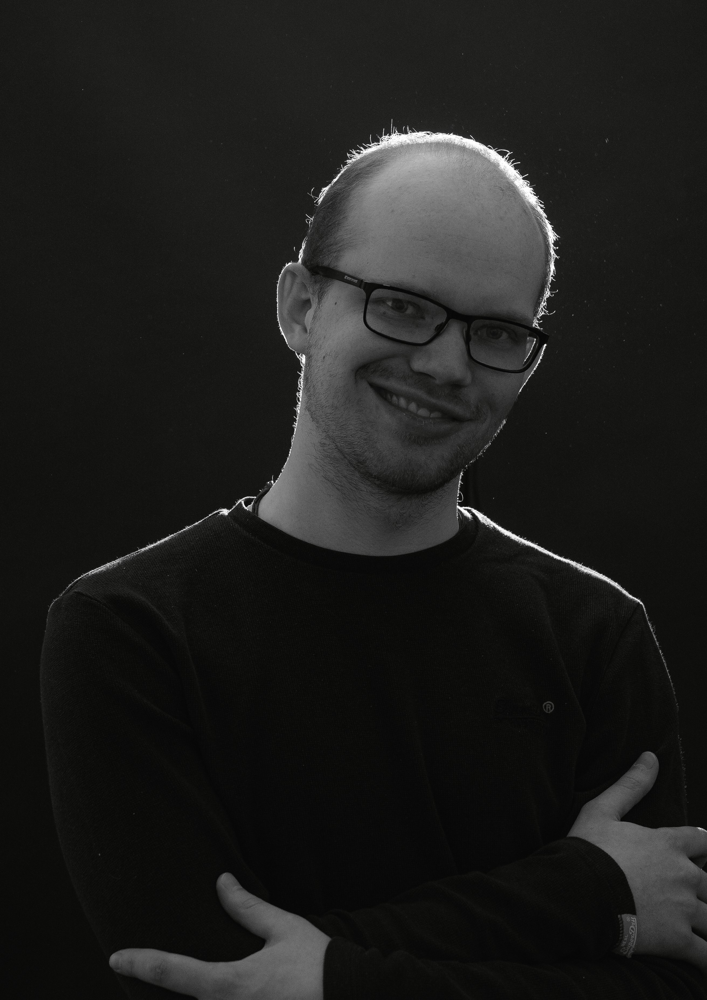
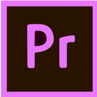
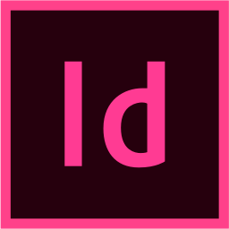

Hvem er jeg?
 Jeg er en 24 årige ung mand, som er uddannet multimediedesigner hos UCL Erhvervsakademi og Professionshøjskole i Odense.
Jeg er meget intresseret i computerspil og andre medier, både retro og moderne, og taler engelsk, dansk og japansk. Jeg er argeanceter, keativ og inspirationssøgende person med en god sans for humor. Jeg er god til gruppearbejde, som altid holder sine aftaler og pligter og gør mere end bare det minimale som der kreves.
Mine Kompetancer
Igennem mit forløb har jeg udviklet nogle kompetaner i forhold til brug af programmer til at arbejde med;
Billed og Video og Lyd Redigering:


Skitser, Animation, Wireframes og Design:
 

Kodning og Webdesign: